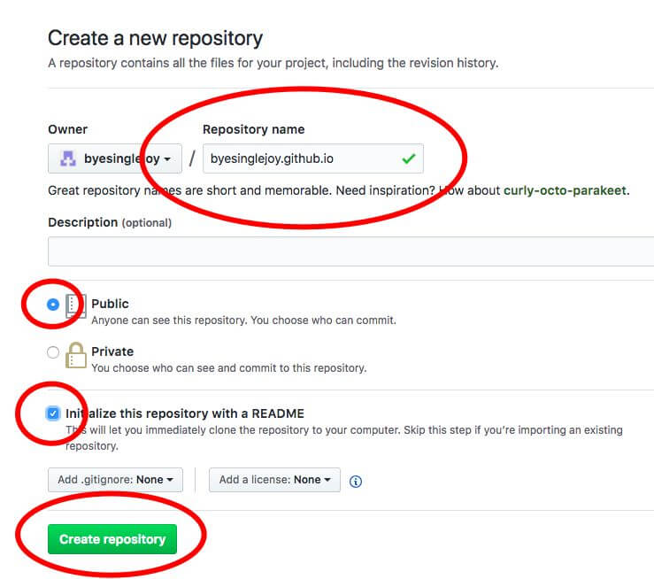
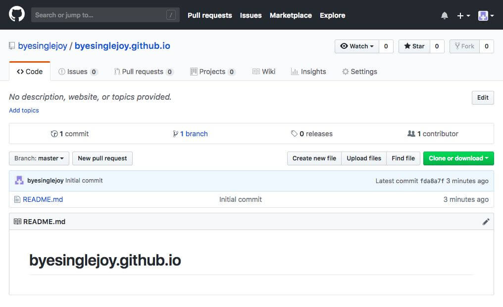
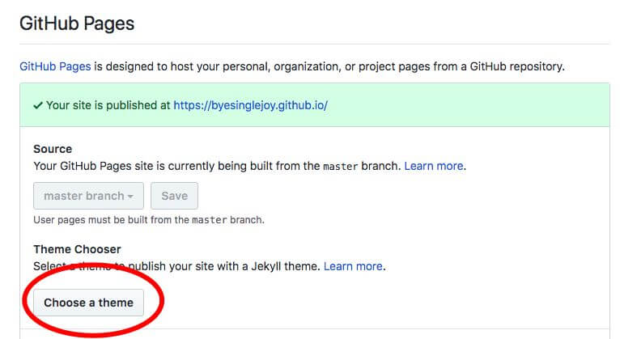
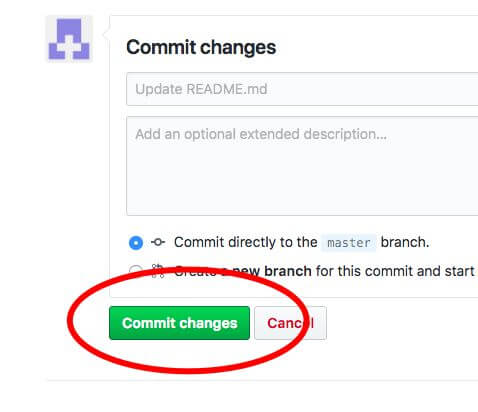

不拨号是上不了网的，今天也是如此。 ——不鳥萬如一
不知从什么时候起，唾手可得的物件或者知识成为一种司空见惯，消费成为这个时代理所当然的正确。消费只需「一刹那」间即刻完成，它无须理会商品背后的艰辛而漫长的生产过程。习得/传授 某项技能成为一件可耻的事情，因为人们 习得/传授 某项技能劳心劳神。这是消费主义的全面胜利。
我们习惯于使用信息孤岛创制的封闭空间，它无所不在、无所不能，渗透着包裹着我们，构建了我们的世界。彷佛我们日常使用的电子终端设备和互联网服务都是天上掉下来得一样，魔法一般出现我们的眼前，只要消费就可意义升华。那些「自愿加班」的产线工人、通宵达旦写程序的工程师、大雨中电瓶车送外卖的骑手们，她们成了看不见的人，被淹没在商品价值逻辑之中。
欲望被压抑被审查之后，才会呈现出「自我」，真实被掩盖在荒漠之下。赛博空间游击队员知晓街头巷尾每一个监控设备，她们既不畏惧，也不甘心沉寂。透过探索监控死角，使得被淹没的「劳动者与生产关系」呈现在所有人面前。在赛博空间游击队员造梦的时刻，机械复制时代的技术与媒介终于成为被压迫者手中的武器。
GitHub Pages 作为被压迫者革命武器，应该如何上膛？此教程为beta0.1。
后续迭代，怨不通知。
万维网、浏览器、网站与Github Pages
万维网（英语：World Wide Web），亦作「WWW」、「Web」，是一个由许多互相链接的超文本组成的系统，通过互联网访问。
——维基百科词条「万维网」
我们日常打开IE、Chrome、Safari抑或自由的Firefox浏览网页站点，就是通过超文本传输协定（http）访问了一个远程文件，通过浏览器访问的所有网站构成了我们熟知的万维网。
构成网站的文件不是从真空中神秘产生，它需要硬盘空间进行储存。网站文件都储存在远方的电脑之中，我们把远程存储这些文件的电脑称为服务器，其实服务器不过就是一台电脑。
我们可以把远程服务器的网页文件想象成储存在移动硬盘上的小电影，这些小电影需要播放器才能播放，而浏览器就是相当于播放网页文件的播放器。http协定就是链接移动硬盘和电脑的数据线，通过数据线（http协定）和文件浏览器（浏览器），我们就可以访问移动硬盘（服务器）上的文件。
通常服务器需要购买才能使用，毕竟硬件需要花钱，开机需要联网和耗电，这都是成本。令人欣喜的是GitHub免费提供了储存网页的空间——Github Pages。
理解了这些万维网基本运行逻辑，我们才能更好地操作GitHub Pages。Github是一个程序员间协作开发代码的应用，其中它提供了一项名为GitHub Pages的服务，可供我们储存网页文件，相当于免费赠与我们一个小U盘。
我们只需要将制作好的网页文件上传至GitHub提供的储存空间，一个新的网站就创制出来了。
markdown、HTML与网页文件
Markdown是一种轻量级标记语言，创始人为約翰·格魯伯（英语：John Gruber）。它允许人们「」 使用易读易写的纯文本格式编写文档，然后转换成有效的XHTML（或者HTML）文档」 。 ——维基百科词条「万维网」
超文本标记语言（英语：HyperText Markup Language，简称：HTML）是一种用于创建网页的标准标记语言。HTML是一种基础技术，常与CSS、JavaScript一起被众多网站用于设计令人赏心悦目的网页、网页应用程序以及移动应用程序的用户界面。网页浏览器可以读取HTML文件，并将其渲染成可视化网页。HTML描述了一个网站的结构语义随着线索的呈现，使之成为一种标记语言而非编程语言。 ——维基百科词条「HTML」
我们访问的网站，就是通过浏览器远程读取html文件，它或者是静态文件，或者是由其他语言动态生成。静态文件是早已经做好的文件，动态文件是用户在访问站点时，服务器根据用户请求实时生成文件，通过浏览器呈现在荧幕上。
通过markdown标记语言，我们既可以方便地制作html静态文件，也可以将markdown文件存在GitHub上通过Jekyll驱动实时生成html文件。
写markdown文件一般需要markdown编辑器，编辑器有本地软件，也有网页版。大家可以自行探索，web版编辑器有不少，在这里笨教推荐两款本地软件。MWeb和Typora，MWeb仅支持Mac，Typora支持win、Mac和Linux。
markdown语言非常简单，用于html生产则只需掌握以下几个最基本的语法。
# 一级标题
## 二级标题
### 三级标题
**加粗**
*斜体*
>引用
<超链接URl>
<email>
更多语法请游击队员们自行去搜索学习。这里提示一下下，很多人可能不理解插入图片的操作。不管是在markdown中预览中显示的图片，还是网页中图片，这些图片都是储存在某个硬盘，或者本地电脑，或者远程服务器。通过GitHub Pages建站，需要将图片上传至GitHub库中，生成 链接/URL。有了url，图片就可在markdown中使用。
Github Pages 搭建站点
通常github建立博客，大家都是通过git操作，但太过复杂，我们只需直接上传文件即可建站。
首先注册GitHub账户，我们需要一个Email接受验证邮件，推荐使用Protonmail。Github网站使用的自然语言为英文，如看不懂请自行使用机器翻译。

点击sign up，填入信息，注册即可。选择 username/用户名 要慎重考量，因为我们最后得到的站点主页地址：username.github.io。

接下来就获取存在我们网页文件的免费小U盘。注册完成之后，登录，再返回主页，点击New Repository创建一个git库。点击之后，需按照要求验证邮件。

再回到首页，重新点击New Repository创建一个git库。在Repository Name写入与妳注册的username相对应的"username.github.io"，勾选"Initialize this repository with a README"，点击创建。

通常过几分钟，"username.github.io"就可访问，这时我们的网站已经被创制出来了。我们还需要修改它的显示内容，以表达我们的意见，呈现真实世界。
这时返回首页，即可看到我们的项目库已经建立，点击进入。
首先，我们需要上传网页所包含的图片，编辑markdown文件需要用到。因为众所周知的原因，GitHub访问速度稍慢，我们需要在上传图片之前将图片压缩，推荐使用tinypng.com进行压缩。

如果固定使用一个站点，通常会有很多图片。就像在本地电脑管理图片一样，为了便于管理，我们需要建立图片文件夹。在GitHub项目库的页面中点击"Create new file"，输入"文件夹名称/"，出现上图页面时，输入"readme.md"(readme可以随便写)。
返回项目首页，即可看到名字为"文件夹名称"的目录，这时文件夹已经创建，点击进入，再点击"Upload new file"，上传本地图片至图片目录。
同理，也可建立图片二级目录，每一篇文章一个目录，方便管理。
如只是游击性质的临时站点，可直接将图片上传至根目录，在项目首页直接"Upload new file"即可。

上传完图片后，找到目录下图片文件，点击这个图片文件。点击图片，即可得到url（上图红圈），复制该url加上前缀https://，就是完整url。按markdown语法写入markdown文件，就可以显示该图片。
一个markdown编写文章的实例
上传完图片后，找到目录下图片文件，点击这个图片文件。点击图片，即可得到url（上图红圈），复制该url加上前缀https://，就是完整url。按markdown语法写入markdown文件，就可以显示该图片。
一个markdown编写文章的实例
# 一级标题
## 二级标题1

*图片说明*
内容内容内容
## 二级标题

*图片2说明*
内容内容内容
内容**内容加粗**内容
### 三级标题1
内容内容内容
内容内容内容
### 三级标题2
内容内容内容
内容内容内容
直接上传markdown文件建站
通过markdown软件，我们生成了md扩展名的本地文件，需将md文件上传到我们的创建项目中，才能依靠Jekyll驱动生成站点。

在我们创建的项目之后，进入项目主页，点击Setting，进入项目设置界面。找到挑选主题按钮，点击进入选择妳钟爱的主题。

选择保存主题之后，重新进入项目主页会发现有一个"readme.md"文件，将它删除。
将本地生成的markdown文件重命名为readme，这个readme将作为首页，浏览器访问"username.github.io"即可看到。
注意：在markdown模式，上传图片需在选择主题之后。
在"readme.md"文件中，我们写入首页内容。它可以是一篇文章，也可以是文章链接列表，按自己需求决定。
按照上传图片中方法，创建一个pages目录，存放次级页面，次级页面通常为文章页。将文件编辑成markdown文件，命名为"article.md",上传至pages目录，则该文章的访问地位为"username.github.io/pages/article"。
如将article.md直接上传至项目的根目录，则访问地址为"username.github.io/article"。
需要注意，我们分享给伙伴网站地址时候一直粘贴完整地址，"https://"不要忘记。
https://username.github.io/article
生成html文件建站
其实直接上传markdown文件到GitHub是最简单建站方法，但因特殊需求，有时候有的人需统计访客数据。需要在html中加入统计代码，而本地html文件中直接加入统计代码较为方面。

统计代码一般使用Google analytics，注册Google账户登录，添加网站，在admin菜单中获取统计代码。
笨教严重声明，反对窃取访客隐私，请教友们开启浏览器「防止追踪」选项，日常访问不明网站尽量使用浏览器的隐私模式。
利用本地markdown编辑软件，生成html文件，一般方法为在菜单按钮中找到导出或者生成html。生成后，在本地找到该html，编辑加入相应代码。一般来说，编辑html文件需要编辑器，苯教推荐Notepad+++与Sublime Text。
使用编辑器打开html文件，找到
使用编辑器打开html文件，找到代码